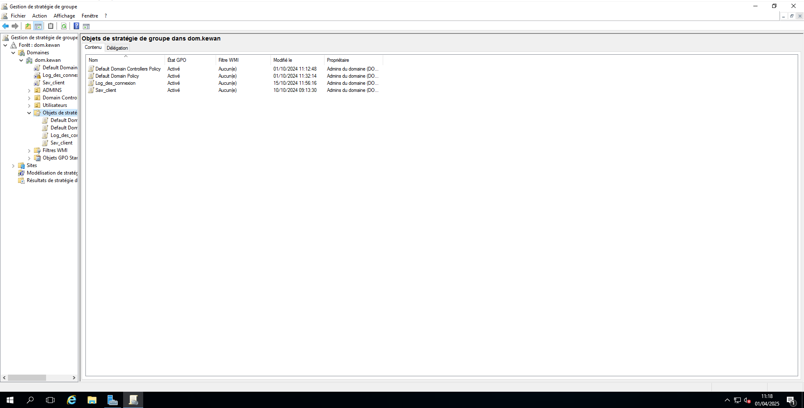

üìç Pr√©sentation
Ce projet a été mené seul dans le cadre de mes apprentissages en BTS SIO option SISR.
L’objectif était de simuler une infrastructure réseau d’entreprise avec un contrôleur de domaine, un serveur secondaire et une machine cliente.
üß± Architecture mise en place
- Contrôleur de domaine (DC) – Windows Server 2016
- Machine cliente – Windows 10 Pro
- Serveur secondaire – Windows Server 2016
- Réseau interne VirtualBox (IP fixes, pas de NAT)
⚙️ Services et configurations
- Installation & promotion Active Directory
- DNS / DHCP interne
- Création d’utilisateurs avec PowerShell
- GPO : restrictions (fond d’écran, cmd, etc.)
- Partages réseau selon les droits
- Suivi via l’observateur d’événements
- Scripts d’ouverture de session par groupe

üõ†Ô∏è Outils utilis√©s
- VirtualBox
-
PowerShell
- GPMC (console de gestion des stratégies de groupe)
- Observateur d’événements Windows
✅ Résultats
- Infrastructure totalement fonctionnelle
- Simulation réaliste d’un environnement professionnel
- Expérience approfondie dans la gestion réseau Windows